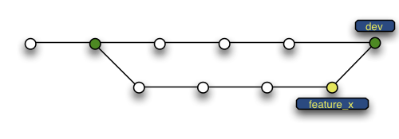

Crie uma pasta, abra-a e execute:
git init
para criar um novo repositório
Crie uma cópia de trabalho em um repositório local executando o comando:
git clone /caminho/para/o/repositório
Seus repositórios locais consistem em três "árvores" mantidas pelo git. A primeira delas é sua Working Directory que contém os arquivos vigentes. A segunda é o Index, que funciona como uma área temporária. Finalmente temos a HEAD, que aponta para o último commit que você fez.
Você pode propor mudanças (adicioná-las ao Index) usando:
git add "arquivo" //adiciona um arquivo específico
git add * //adiciona tudo ao stage
Podemos verificar o que foi adicionado/alterado com:
git status
Para realmente confirmar as mudanças feitas, use:
git commit -m "comentários das alterações"
Finalmente temos nosso arquivo no HEAD, mas ainda não o temos no repositório remoto
Para enviar estas alterações ao seu repositório remoto:
git push origin master
Altere master para qualquer ramo (branch) desejado.
Branches ("ramos") são utilizados para desenvolver funcionalidades isoladas umas das outras. O branch master é o branch "padrão" quando você cria um repositório. Use outros branches para desenvolver e mescle-os (merge) ao branch master após a conclusão.
crie um novo branch chamado "funcionalidade_x" e selecione-o usando
git checkout -b funcionalidade_x
retorne para o master usando
git checkout master
e remova o branch da seguinte forma
git branch -d funcionalidade_x
um branch só estará disponível se usar
git push origin funcionalidade_x
para atualizar seu repositório local execute na sua pasta de trabalho
git pull
para fazer merge de um outro branch ao seu branch ativo (ex. master)
git merge "branch"
antes de fazer o merge das alterações, você pode também pré-visualizá-as
git diff "branch origem" "branch destino"
É recomendado criar rótulos para releases de software
Você pode criar um novo rótulo chamado 1.0.0 executando
git tag 1.0.0 1b2e1d63ff
o 1b2e1d63ff representa os 10 primeiros caracteres do id de commit que você quer referenciar com seu rótulo. Você pode obter o id de commit com
git log
você pode também usar menos caracteres do id de commit, ele somente precisa ser único.
No caso de você ter feito algo errado você pode sobrescrever as alterações locais usando
git checkout -- "arquivo"
isto substitui as alterações na sua árvore de trabalho com o conteúdo mais recente no HEAD. Alterações já adicionadas ao index, bem como novos arquivos serão mantidos.
Se ao invés disso você deseja remover todas as alterações e commits locais, recupere o histórico mais recente do servidor e aponte para seu branch master local desta forma
git fetch origin
git reset --hard origin/master
Inteface gráfica padrão
gitk
Usar saídas do git coloridas
git config color.ui true
Exibir log em apenas uma linha por commit
git config format.pretty oneline
Fazer inclusões interativas
git add -i
Créditos
Guia Prático